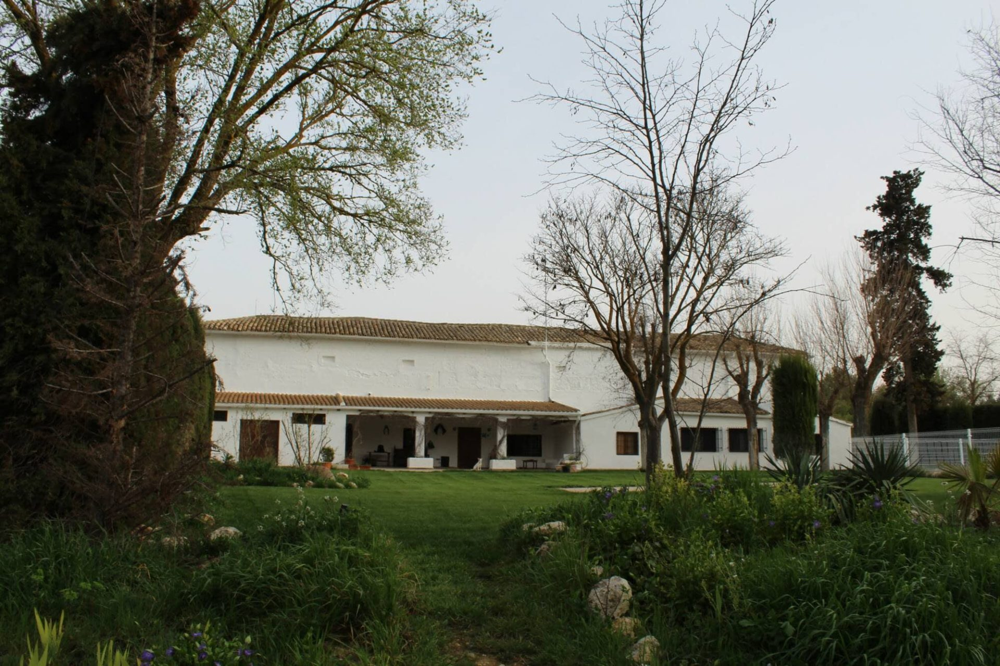
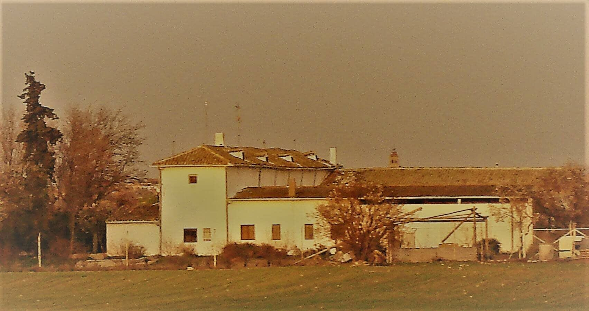
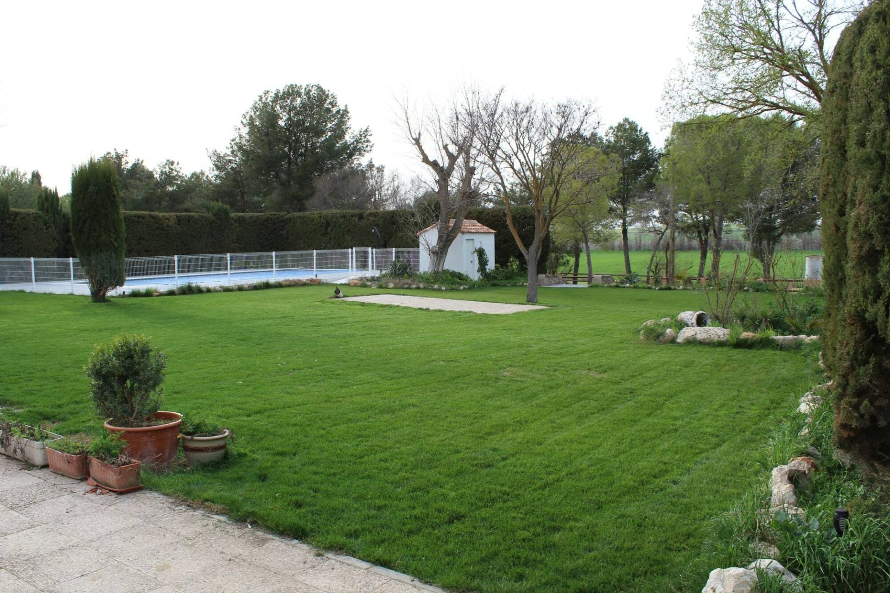

La Casa del Marqués
Conoce la historia de nuestra casa rural

Un lugar lleno de historia, encanto y valor ecológico
La Casa del Marqués, ubicada en Horcajo de Santiago, es un lugar lleno de historia, encanto y de gran valor ecológico. Esta hermosa residencia, enclavada en un lugar de importancia comunitaria dentro de la red ecológica europea Natura 2000, como Zona de Especial Protección para las Aves (ZEPA) denominada «Área Esteparia de la Mancha Norte», ofrece un espacio ecológico y natural con servicios de última generación.
Situada en medio del campo, nuestra casa rural en Horcajo de Santiago ha sido testigo de diversas épocas y ha experimentado múltiples transformaciones a lo largo del tiempo.

Nuestra familia continúa cuidando y desarrollando el legado que el marquesado de Alós creó aquí y, desde el 2023, están abiertas las puertas de este lugar tan especial para acoger a todos aquellos que quieran disfrutar de nuestra casa rural y espacio para eventos.
Con gran dedicación y respeto por su historia, hemos restaurado y preservado la belleza original de la casa, combinando el encanto tradicional con las comodidades modernas.
Hoy en día, la Casa del Marqués es un lugar emblemático y acogedor que ofrece a sus visitantes una experiencia única. La belleza de su arquitectura, los detalles cuidadosamente conservados y los paisajes idílicos que la rodean crean un ambiente mágico y especial.
La propiedad se ha convertido en un lugar ideal para la celebración de eventos especiales, como bodas, comuniones, bautizos, reuniones familiares, retiros… Los acontecimientos encuentran en esta histórica casa el escenario perfecto para crear recuerdos inolvidables.
La tranquilidad, el silencio y la naturaleza son sus mayores encantos.



Tu precio, a tu medida
Cada celebración y cada estancia es distinta. Cuéntanos qué tienes en mente (fechas, número de personas, tipo de evento) y te preparamos un presupuesto personalizado sin compromiso.